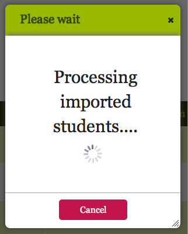
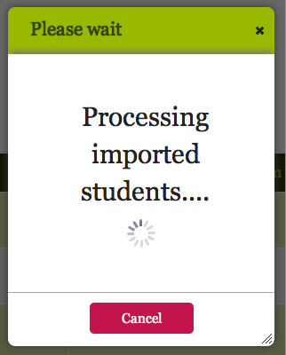

Teachers
The Teachers tab offers administrators a quick overview of all the teachers in the school, providing basic contact information and enabling them to invite new teachers to access QuickSchools via their own unique account login.
A video tutorial giving an overview of the Teachers tab and how to utilize its main features can be viewed in two parts, as follows:
This chapter offers detailed information about how to configure teacher information in QuickSchools. Features described include adding teacher records manually and via import from Xcel, entering or editing basic contact and biographical information, uploading a photo, and inviting teachers to become active QuickSchools users.
- Accessing the Teachers Tab
- Adding Teacher Records Manually
- Importing Teacher Records from Excel
- Inviting Teachers to QuickSchools
Accessing the Teachers Tab
To access the student information tab from your login page, click on the Teachers link in the green bar at the top of the screen, as shown:

This will bring up the main Teachers page, on which you will see a list of all teachers in the school. If you are accessing this page for the very first time, it will appear empty until you add teachers, and the screen will display this message:


Add buttons now appear directly above the list of teachers on the main page.
Adding Teachers Manually
To manually add a teacher, click the Add Teacher button ( ). This will bring up an Add Teachers popup box
that looks like this:
). This will bring up an Add Teachers popup box
that looks like this:

Now you can enter the teacher's full name and email in the corresponding fields in the box. If you would like to sort
the students by last name, be sure to enter them as [Last Name], [First Name] in the name field; otherwise they will be
alphabetized by first name. Teachers can be automatically invited to join QuickSchools by checking the Invite via Email
box. Click the red Add Teacher button ( ) to
complete the addition of the teacher record to the Teachers page.
) to
complete the addition of the teacher record to the Teachers page.
Importing Teacher Records from Excel
An efficient way to add large numbers of teachers to your QuickSchools account is to use the Import feature. To do this you need to have your teacher data accessible in an Excel file, one with either an ".xls" or ".xlsx" extension. QuickSchools will automatically analyze your file and map commonly-named columns to the fields in a QuickSchools student record.
To proceed, click on the Import button ( ).
This will bring up a file selection screen, as shown:
).
This will bring up a file selection screen, as shown:

Once you select the .xls or .xlsx file containing your teacher data, you will see a second screen displaying each set of data from your file and the corresponding field it will be mapped to in the QuickSchools database:

First, check to make sure that the file you have selected is correct. If not, click on the Change link and
select the right one. Each field in the .xls or .xlsx file will be mapped to a corresponding field in
the QuickSchools database. Again, if the choice given is not the best one, you can change it by selecting
a different one from the drop-down menu. If you want to omit an entire column of data and prevent it from
being mapped onto a QuickSchools field, place your mouse over the Don't import this column button
( ) on the right and click it to prevent
that data set from being uploaded.
) on the right and click it to prevent
that data set from being uploaded.
When you have made all the necessary changes, scroll down to the bottom of the screen, which should look like this:

Now click the red button
Click here to import data ( ) to initiate the
import. Depending on the size of your file, the process may take a few minutes, during which time you may see either of the
following popup message boxes:
) to initiate the
import. Depending on the size of your file, the process may take a few minutes, during which time you may see either of the
following popup message boxes:
 or 
or  After the import process is complete, your data will be added to your QuickSchools account!
Inviting Teachers to QuickSchools
If you have imported teachers through Excel or have not checked the Invite via Email box on a manual add, new teachers
will display an Invite Now button ( )
under Invitation Status on the main page:
)
under Invitation Status on the main page:

Clicking on Invite Now () will bring up a popup
box will appear with the teacher’s name and email address and a red Invite button
( ) at the bottom.
) at the bottom.

Clicking Invite () will send an email to the
teacher with a password inviting them to log into QuickSchools, and change the Invitation Status on the main page
to Invited. After the teacher logs in for the first time, the status will change to Active.